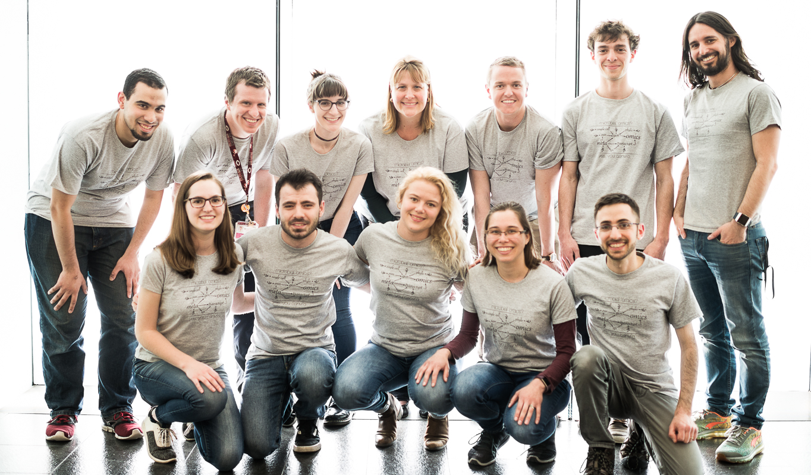

{% assign current = 0 %}
{% assign past = 0 %}
{% assign forever = 0 %}

{% for person in site.data.people %}
    {% if person.official and person.tenure_end == nil %}{% assign current = current | plus: 1 %}{% endif %}
    {% if person.official and person.tenure_end %}{% assign past = past | plus: 1 %}{% endif %}
    {% if person.contributor %}{% assign forever = forever | plus: 1 %}{% endif %}
{% endfor %}

<div class="people">

<div class="category-box" style="margin-top:50px">
    <a href="#current"><span class="category-item">Current ({{ current }})</span></a>
    <a href="#past"><span class="category-item">Past ({{ past }})</span></a>
    <a href="#forever"><span class="category-item">Forever ({{ forever }})</span></a>
</div>

<p align="center"></p>

<p class="notice">Interested in joining? Please consider reading <a href="../culture/" style="color: darkblue;">the lab culture and expectations</a> first.</p>

<p class="persons-title" href="current" style="margin-top: 0px;">Current members (sorted by name)<a name="current">&nbsp;</a></p>

{% assign people_sorted = site.data.people | sort:"name" %}

{% for person in people_sorted %}
    {% if person.official and person.tenure_end == nil %}
    <div class="person">
        <div class="person-photo">
        {% if person.avatar contains 'http' %}
        	
        {% else %}
        	
        {% endif %}
        </div>

        <div class="person-info">
          <h3>{{ person.name }} <span class="person-role"> ({{ person.role }})</span></h3>
            <div class="social-box">
              {% if person.web %}<a href="{{ person.web }}" class="person-social" target="_blank"><i class="fa fa-fw fa-home"></i> Web</a>{% endif %}
              {% if person.email %}<a href="mailto:{{ person.email }}" class="person-social" target="_blank"><i class="fa fa-fw fa-envelope-square"></i>Email</a>{% endif %}
              {% if person.twitter %}<a href="http://twitter.com/{{ person.twitter }}" class="person-social" target="_blank"><i class="fa fa-fw fa-twitter-square"></i> Twitter</a>{% endif %}
              {% if person.google.plus %}<a href="http://plus.google.com/+{{ person.google.plus }}" class="person-social" target="_blank"><i class="fa fa-fw fa-google-plus-square"></i> Google+</a>{% endif %}
              {% if person.linkedin %}<a href="http://linkedin.com/in/{{ person.linkedin }}" class="person-social" target="_blank"><i class="fa fa-fw fa-linkedin-square"></i> LinkedIn</a>{% endif %}
              {% if person.github %}<a href="http://github.com/{{ person.github }}" class="person-social" target="_blank"><i class="fa fa-fw fa-github"></i> Github</a>{% endif %}
              {% if person.stackoverflow %}<a href="http://stackoverflow.com/users/{{ person.stackoverflow }}" class="person-social" target="_blank"><i class="fa fa-fw fa-stack-overflow"></i> Stackoverflow</a>{% endif %}
              {% if person.youtube %}<a href="https://youtube.com/user/{{ person.youtube }}" class="person-social" target="_blank"><i class="fa fa-fw fa-youtube-square"></i> Youtube</a>{% endif %}
              {% if person.address %}<br /><span class="person-social"><i class="fa fa-fw fa-map-marker"></i>Address: {{ person.address  }}</span>{% endif %}
              {% if person.phone %}<br /><span class="person-social"><i class="fa fa-fw fa-phone"></i>Phone: {{ person.phone }}</span>{% endif %}
              {% if person.fax %}<span class="person-social"><i class="fa fa-fw fa-fax"></i>Fax: {{ person.fax }}</span>{% endif %}

            </div>

          <p>{{ person.bio }}</p>

          {% if person.affiliations %}
          <ul class="person-affiliations">
          {% for affiliation in person.affiliations %}
          <li>{% if affiliation.title_link %}<a id="aff-link" target="_blank" href="{{ affiliation.title_link }}">{% endif %}{{ affiliation.title }}{% if affiliation.title_link %}</a>{% endif %}{% if affiliation.inst %}, <a href="{{ affiliation.inst_link }}" id="aff-link" target="_blank">{{ affiliation.inst }}</a>{% endif %}.</li>
          {% endfor %}
          </ul>
          {% endif %}


        </div>
    </div>
    {% endif %}
{% endfor %}

<div class="alumni">

<p class="persons-title">Those we miss (sorted by date)<a name="past">&nbsp;</a></p>

{% for person in site.data.people %}
    {% if person.official and person.tenure_end %}
    <div class="alumnus">
        <div class="person-photo">
        {% if person.avatar contains 'http' %}
        	
        {% else %}
        	
        {% endif %}
        </div>

        <div class="person-info">
          <h3>{{ person.name }}</h3>

          <p>
             {{ person.nick_name }} was a {{ person.role }} with us between {{person.tenure_start}} and {{person.tenure_end}}.
             {{ person.contributions }}. The last time we checked, {{ person.nick_name }} was {{ person.current_info }}.
          </p>

        </div>
    </div>
    {% endif %}
{% endfor %}
</div>

<div class="heroes">

<p class="persons-title">Contributing heroes<a name="forever">&nbsp;</a></p>

{% for person in site.data.people %}
    {% if person.contributor %}
    <div class="person">
        <div class="person-photo">
        {% if person.avatar contains 'http' %}
        	
        {% else %}
        	
        {% endif %}
        </div>

        <div class="person-info">
          <h3>{{ person.name }}</h3>
            <div class="social-box">
              {% if person.web %}<a href="{{ person.web }}" class="person-social" target="_blank"><i class="fa fa-fw fa-home"></i> Web</a>{% endif %}
              {% if person.email %}<a href="mailto:{{ person.email }}" class="person-social" target="_blank"><i class="fa fa-fw fa-envelope-square"></i>Email</a>{% endif %}
              {% if person.twitter %}<a href="http://twitter.com/{{ person.twitter }}" class="person-social" target="_blank"><i class="fa fa-fw fa-twitter-square"></i> Twitter</a>{% endif %}
              {% if person.google.plus %}<a href="http://plus.google.com/+{{ person.google.plus }}" class="person-social" target="_blank"><i class="fa fa-fw fa-google-plus-square"></i> Google+</a>{% endif %}
              {% if person.linkedin %}<a href="http://linkedin.com/in/{{ person.linkedin }}" class="person-social" target="_blank"><i class="fa fa-fw fa-linkedin-square"></i> LinkedIn</a>{% endif %}
              {% if person.github %}<a href="http://github.com/{{ person.github }}" class="person-social" target="_blank"><i class="fa fa-fw fa-github"></i> Github</a>{% endif %}

            </div>

          <p>{{ person.bio }}</p>

          {% if person.affiliations %}
          <ul class="person-affiliations">
          {% for affiliation in person.affiliations %}
          <li>{% if affiliation.title_link %}<a id="aff-link" target="_blank" href="{{ affiliation.title_link }}">{% endif %}{{ affiliation.title }}{% if affiliation.title_link %}</a>{% endif %}{% if affiliation.inst %}, <a href="{{ affiliation.inst_link }}" id="aff-link" target="_blank">{{ affiliation.inst }}</a>{% endif %}.</li>
          {% endfor %}
          </ul>
          {% endif %}

          <ul class="person-contributions">
          {% for post in site.posts %}
                {% if post.authors contains person.alias %}
                    <li><a id="contrib-link" href="{{ site.url }}{{ post.url }}" title="{{ post.title }}">{{ post.title }}</a> <small>({{ post.date | date: "%a, %b %d, %Y" }})</small></li>
                {% endif %}
          {% endfor %}
          </ul>

        </div>
    </div>
    {% endif %}
{% endfor %}
</div>


<p class="notice" style="margin-top: 200px;">
<b>Meren's note on our struggle with the lack of gender diversity in the lab</b>: This is something we are quite aware and upset about, and I finally decided to put a note about the issue on this page
to make sure it is clear to everyone. I see the gender imbalance in our lab as my failure, and I am looking forward to fixing it. I advertised only one postdoc position so far, which was the only time
I had the opportunity to ameliorate the lack of diversity, however, I wasn't lucky enough to get enough number of applications from women. When I mentioned our struggle with
attracting applications from women to the lab to Rika Anderson, she speculated that it might be because there is a major gender imbalance in computer science. Although that is true, I would like to mention
that I am interested in working with highly qualified women in both microbiology <i>and/or</i> computer science. I also am suggested to put photos of my collaborators on this page, since a
very large fraction of the people I collaborate with are women, to make sure people are not discouraged by the current representation of women in the lab. Although I understand the good
intention, I don't want to use names or photos of my friends and colleagues as a part of an apology for something we have to fix. Throughout my life I was very critical of cultural and
political practices that make people feel comfortable with the lack of diversity, and this note is not my attempt to excuse myself form this responsibility, but to communicate my discomfort
with where we are in our lab. If you are a woman, or any other poorly represented part of the society in science considering applying to our lab, please don't let the current situation stop you
from doing it. Thank you!
</p>

